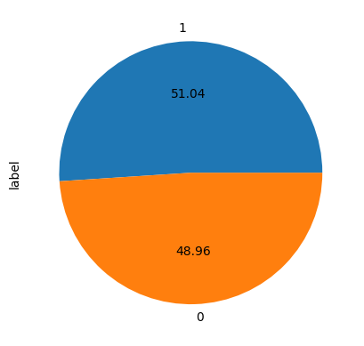
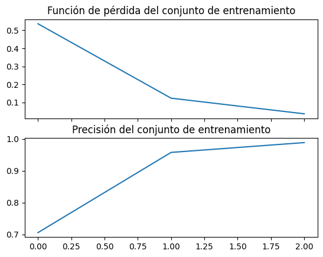
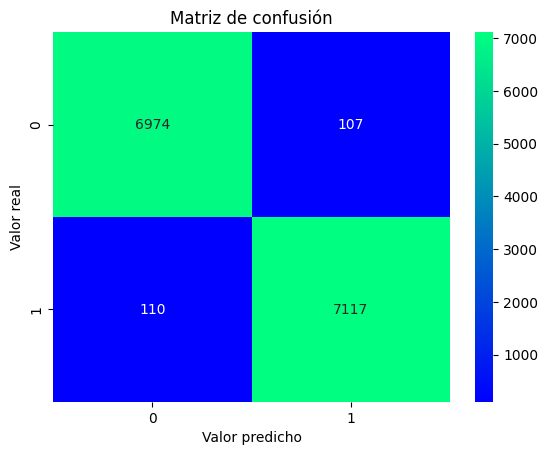

from tensorflow.keras import datasets
from tensorflow.keras.models import Sequential
from tensorflow.keras.layers import (Dropout,
Dense,
SimpleRNN,
LSTM,
Conv2D,
Embedding,
MaxPooling2D,
Flatten,
)
from tensorflow.keras import optimizers
from tensorflow.keras.utils import to_categorical
from keras.preprocessing.sequence import pad_sequences
from tensorflow.keras.layers.experimental.preprocessing import TextVectorization
1 Context
La propagación de fake news o noticias falsas se incrementó a partir de la pandemia por COVID-19. Estas son un problema alarmante porque hacen que las personas realicen actividades que normalmente no llevarían a cabo o que actúen de manera caótica. Un ejemplo es -> esta noticia <-, en la que se relata cómo notas falsas acerca del daño que ocasiona la 5G al cuerpo provocaron que muchas personas en el Reino Unido quemaran torres de telecomunicaciones aun sin ser estas de 5G.
A ti, como persona experta en redes neuronales, te han encargado hacer un predetector de noticias falsas para los fact-checker del mundo.
Para realizarlo, tienes a tu disposición el siguiente dataset: https://www.kaggle.com/datasets/saurabhshahane/fake-news-classification
- Prueba tu modelo con esta noticia falsa: https://www.breitbart.com/politics/2016/09/10/exposed-fbi-director-james-comeys-clinton-foundation-connection/
- Prueba tu modelo con esta noticia verdadera: https://www.washingtonpost.com/sports/2022/11/14/world-cup-female-referee-kathryn-nesbitt/
1.1 Importing Libraries
from sklearn.model_selection import train_test_split
from sklearn.preprocessing import StandardScaler
from sklearn.metrics import confusion_matriximport numpy as np
from pandas import (read_csv,
DataFrame,
)import matplotlib.pyplot as pltfrom seaborn import countplot, heatmapfrom PIL import Imageimport requestsfrom bs4 import BeautifulSoupfrom google.colab import drive
drive.mount('/content/drive')Mounted at /content/drive1.2 Load Dataset
df = read_csv('/content/drive/MyDrive/Colab Notebooks/proyectos/WELFake_Dataset.csv')
df.head()| Unnamed: 0 | title | text | label | |
|---|---|---|---|---|
| 0 | 0 | LAW ENFORCEMENT ON HIGH ALERT Following Threat... | No comment is expected from Barack Obama Membe... | 1 |
| 1 | 1 | NaN | Did they post their votes for Hillary already? | 1 |
| 2 | 2 | UNBELIEVABLE! OBAMA’S ATTORNEY GENERAL SAYS MO... | Now, most of the demonstrators gathered last ... | 1 |
| 3 | 3 | Bobby Jindal, raised Hindu, uses story of Chri... | A dozen politically active pastors came here f... | 0 |
| 4 | 4 | SATAN 2: Russia unvelis an image of its terrif... | The RS-28 Sarmat missile, dubbed Satan 2, will... | 1 |
Cargamos el dataset que usaremos para el entrenamiento de nuetro modelo, y lo definimos como df
##EDA
df.info()<class 'pandas.core.frame.DataFrame'>
RangeIndex: 72134 entries, 0 to 72133
Data columns (total 4 columns):
# Column Non-Null Count Dtype
--- ------ -------------- -----
0 Unnamed: 0 72134 non-null int64
1 title 71576 non-null object
2 text 72095 non-null object
3 label 72134 non-null int64
dtypes: int64(2), object(2)
memory usage: 2.2+ MBMostramos la información general del dataset; Se muestran los tipos de datos de cada columna, el total de muestras por columna y la existencia de valores nulos. Podemos ver la primera columna la cual no nos serviria para nada, ya que seria como un identificador numerico de cada uno de los valores.
df.duplicated().sum()0Acá podremos observar la sumatoria de todos los valores duplicados del dataset, de no existir algun valor duplicado nos imprime un 0
df.isnull().sum()Unnamed: 0 0
title 558
text 39
label 0
dtype: int64print(df.isnull().sum() / len(df)*100)Unnamed: 0 0.000000
title 0.773560
text 0.054066
label 0.000000
dtype: float64Mostramos los valores faltantes de las columnas a trabajar, podemos observar que hay datos faltantes, pero es tan minimo que serian irrelevantes para el dataset
-
En términos generales, se suelen considerar los siguientes grados de impacto, dependiendo del porcentaje de valores faltantes (dumb rules):
- Menos de 1%: Trivial (no relevante)
- 1-5%: Manejable
- 5-15%: Manejable mediante métodos sofisticados
- Más de 15%: Crítico, con impacto severo en cualquier tipo de interpretación
1.3 Data Preprocessing
df.drop(columns=['Unnamed: 0'], inplace=True)Acá borramos dicha columna que no usaremos
df.dropna(inplace=True)df = df.reset_index(drop=True)Eliminamos los valores faltantes, y reestablecemos los indices del dataframe
1.4 Univariate Analysis
df['label'].value_counts().plot.pie(autopct='%.2f')
df['label'].value_counts()1 36509
0 35028
Name: label, dtype: int64Mediante la grafica pie o pastel, observamos que la columna label que contiene si la notica es falsa o verdadera, esta muy equilibrada bastante parejo
1.5 Train and test data
X = df['text']
y = df['label']
# Dividir los datos en conjunto de entrenamiento y prueba
X_train, X_test, y_train, y_test = train_test_split(X,
y,
test_size=0.2,
random_state=42)Antes de llevar acabo la tokenización, definimos nuestras variables X y y, en este caso usare solo la columna text para entrenar mi modelo, la columna title no creo que aporte al modelo, al ser un clickbait aportaria datos erroneos al modelo.
##Tokenization
# Definir el TextVectorization con salida de enteros
text_vectorizer = TextVectorization(max_tokens=10000,
output_mode='int', # El tipo de salida
standardize='lower', # Optimizador
output_sequence_length=500, # Longitud de salida
pad_to_max_tokens=500,
)
text_vectorizer.adapt(X_train)
X_train = text_vectorizer(X_train)
X_test = text_vectorizer(X_test)Definimos una variable con el TextVectorization para transformar el texto y poder trabajar los datos, le aplicamos unos cuantos hiperparametros para mejorar la salida de los datos.
Adaptamos con la variable X_train y luego vectorizamos sobreescribiendo las variables de conjunto X
1.6 Define the Neural Network
# Definir el modelo
model = Sequential()
model.add(Embedding(10000, 128, input_length=500))
model.add(LSTM(128))
# Agregar una capa densa final con activación sigmoid para la clasificación binaria
model.add(Dense(1, activation='sigmoid'))
model.summary()Model: "sequential"
_________________________________________________________________
Layer (type) Output Shape Param #
=================================================================
embedding (Embedding) (None, 500, 128) 1280000
lstm (LSTM) (None, 128) 131584
dense (Dense) (None, 1) 129
=================================================================
Total params: 1411713 (5.39 MB)
Trainable params: 1411713 (5.39 MB)
Non-trainable params: 0 (0.00 Byte)
_________________________________________________________________Definimos nuestro modelo, en este caso utilizando la arquitectura sequential en Keras, consta de una capa de embedding(128 dim con vocabulario de 10.000) para convertir los números enteros en vectores de embeddings, seguida de una capa LSTM(128Unidades) para modelar las dependencias temporales en los datos de secuencia, y finalmente una capa densa con activación sigmoidal para la clasificación binaria.
1.7 Compile the model
# Compilamos el modelo
model.compile(optimizer='adam', loss='binary_crossentropy', metrics=['accuracy'])Compilamos el modelo especificando la función de pérdida y el optimizador, este caso con binary_crossentropy y adam, con la metrica de desempeño accuracy
1.8 Train the model
# Entrenamos el modelo
history = model.fit(X_train, y_train, epochs=3, batch_size=42)Epoch 1/3
1363/1363 [==============================] - 87s 61ms/step - loss: 0.5365 - accuracy: 0.7056
Epoch 2/3
1363/1363 [==============================] - 39s 29ms/step - loss: 0.1237 - accuracy: 0.9578
Epoch 3/3
1363/1363 [==============================] - 32s 23ms/step - loss: 0.0371 - accuracy: 0.9887Entrenamos nuestro modelo el cual definimos como history, y lo haremos con 3 epocas en este caso. En la sección de evaluación del modelo lo explicare.
1.9 Evaluate the model
fig = plt.figure()
ax1 = fig.add_subplot(2,1,1)
ax1.plot(history.history['loss'])
ax1.set_title('Función de pérdida del conjunto de entrenamiento')
ax2 = fig.add_subplot(2,1,2, sharex= ax1)
ax2.plot(history.history['accuracy'])
ax2.set_title('Precisión del conjunto de entrenamiento')
plt.setp(ax1.get_xticklabels(), visible=False)
plt.show()
Graficamos la función de perdida y la precisión del modelo conforme avanza de epocas en el entrenamiento. Ya en la epoca 2 se consiguio el 95% de precisión con una perdida de información del 12%, a la epoca 3 era suficiente para el entrenamiento cuidando los recursos disponibles
# Evaluar el modelo en el conjunto de prueba
loss, accuracy = model.evaluate(X_test, y_test)
print(f'Loss: {loss}, Accuracy: {accuracy}')448/448 [==============================] - 4s 8ms/step - loss: 0.0447 - accuracy: 0.9848
Loss: 0.04466693475842476, Accuracy: 0.9848336577415466Evaluamos nuestro modelo con las metricas de precisión y función de perdida. Nos arroja una perdida de información de un casí 4% y una precisión del 98%
1.10 Predict test data
predicciones = model.predict(X_test)
print(predicciones)448/448 [==============================] - 4s 7ms/step
[[9.9916887e-01]
[4.8479729e-04]
[2.8683492e-03]
...
[9.9893659e-01]
[3.7822025e-03]
[9.9452496e-01]]Aplicamos un predict con nuestro modelo al conjunto de prueba X_test, y lo definimos como predicciones
predicciones_flat = predicciones.flatten()
predic_si = DataFrame({'Real': y_test,
'Predicción': predicciones_flat})
predic_si.head(10)| Real | Predicción | |
|---|---|---|
| 53925 | 1 | 0.999169 |
| 6939 | 0 | 0.000485 |
| 28713 | 0 | 0.002868 |
| 65420 | 1 | 0.996083 |
| 2286 | 0 | 0.001370 |
| 34184 | 1 | 0.998988 |
| 29103 | 1 | 0.994738 |
| 26688 | 0 | 0.001819 |
| 42956 | 1 | 0.958652 |
| 65156 | 1 | 0.999581 |
Les mostrare una comparación con los datos reales frente a los predichos, para poder mostrarlo en un dataframe, aplane las muestras para poder trabajarlas en un dataframe
umbral = 0.5 # Umbral de decisión para la clasificación binaria
predicciones_binarias = np.where(predicciones >= umbral, 1, 0)
# Calcular la matriz de confusión
cm = confusion_matrix(y_test, predicciones_binarias)Para lograr graficar nuestra matriz de confusión y observar el desempeño, ambas varibles deben ser de valor 0 o 1, es decir, es un problema de clasificación binaria. Definimos una variable con un umbrar definido, de manera que los “rendondee” a 0 o 1
heatmap(cm, annot= True, fmt= '.0f', cmap= 'winter')
plt.title('Matriz de confusión')
plt.xlabel('Valor predicho')
plt.ylabel('Valor real')
plt.show()
Graficamos el desempeño del modelo con esta matriz de confusión la cual nos arroja un buen desempeño, ya que ha acertado en su gran mayoria a los True positive y True negative
Ya con nuestro modelo listo, lo usaremos para corroborar si las siguientes noticias son falsas o verdaderas.
#Parse a fakenew
1.11 Load Data
1.12 HTLM extraction
url = "https://www.breitbart.com/politics/2016/09/10/exposed-fbi-director-james-comeys-clinton-foundation-connection/"Definimos una variable con la dirección de la pagina web donde proviene la noticia
response = requests.get(url)
if response.status_code != 200:
raise Exception("URL was not found")
text = response.textAcá sacamos toda la información de la pagina web, en caso de ser una dirección erronea, me arrojaria una advertencia
#display(text)Así se ve la noticia antes del pre-procesamiento
1.13 Text Processing
soup = BeautifulSoup(text, "html.parser")main = soup.find(id="MainW")
paragraphs = main.findAll("p")
content = ""
for paragraph in paragraphs:
content = content + paragraph.get_text()
texto_lista = [content]Acá definimos una variable con la extracción del texto del HTLM, luego iteramos por parrafos y seleccionado con el id especificamente la noticia y todo almacenandolo en la variable texto lista. Para aplicarle la tokenización tuve que hacerla lista, por eso lo de la linea 9.
#print(texto_lista)Ahora va tomando mejor forma, así se ve luego de pre-procesamiento de texto.
1.14 Tokenization
new_vocab_size = 597
new_text_vectorizer = TextVectorization(max_tokens=new_vocab_size,
standardize='lower',
output_mode='int',
output_sequence_length=500, # Longitud de salida
pad_to_max_tokens=500,
)
new_text_vectorizer.adapt(texto_lista)
vectorized_text_fake = new_text_vectorizer(texto_lista)Tokenizamos el texto de la noticia, modifique unos hiperparametros como el maximo de tokens colocandole exacto al texto, del resto los mismos al que use en el modelo.
vectorized_text_fake<tf.Tensor: shape=(1, 500), dtype=int64, numpy=
array([[ 52, 71, 34, 5, 268, 7, 22, 25, 15, 26, 101, 410, 6,
95, 246, 9, 2, 36, 542, 379, 34, 335, 85, 441, 10, 14,
126, 7, 2, 120, 7, 46, 11, 34, 16, 486, 457, 4, 2,
562, 490, 489, 7, 52, 71, 409, 6, 101, 95, 34, 150, 206,
18, 28, 582, 2, 140, 79, 337, 11, 34, 273, 559, 138, 9,
414, 418, 303, 2, 492, 299, 138, 438, 12, 353, 7, 472, 9,
8, 1, 17, 5, 11, 21, 485, 501, 26, 131, 355, 12, 5,
11, 21, 496, 319, 555, 6, 14, 225, 39, 55, 19, 14, 42,
13, 48, 50, 174, 29, 2, 60, 38, 9, 473, 2, 11, 434,
221, 363, 103, 36, 338, 8, 3, 31, 22, 25, 4, 153, 8,
295, 2, 205, 235, 255, 9, 28, 79, 275, 411, 12, 150, 534,
390, 131, 459, 8, 465, 156, 44, 4, 109, 78, 585, 17, 45,
364, 45, 30, 32, 5, 11, 21, 468, 9, 197, 172, 251, 18,
482, 570, 68, 85, 384, 574, 10, 86, 171, 7, 2, 49, 594,
186, 28, 59, 2, 49, 75, 28, 82, 478, 3, 45, 30, 6,
32, 196, 302, 596, 18, 5, 68, 494, 112, 349, 70, 15, 8,
366, 17, 45, 30, 4, 14, 381, 78, 19, 2, 519, 184, 28,
59, 4, 1, 347, 219, 156, 44, 4, 518, 30, 16, 5, 11,
21, 467, 73, 592, 3, 567, 5, 11, 426, 63, 58, 4, 1,
3, 279, 30, 16, 149, 5, 58, 7, 2, 584, 533, 7, 522,
4, 464, 182, 561, 11, 1, 3, 484, 5, 240, 389, 1, 30,
177, 1, 575, 10, 57, 500, 17, 2, 46, 11, 236, 483, 406,
153, 8, 32, 5, 556, 356, 5, 476, 6, 5, 39, 224, 193,
520, 58, 7, 2, 371, 146, 64, 407, 26, 576, 81, 145, 10,
33, 393, 211, 220, 183, 230, 3, 283, 41, 248, 81, 452, 29,
2, 514, 7, 2, 152, 581, 68, 357, 76, 3, 64, 73, 277,
123, 6, 62, 198, 311, 551, 264, 105, 19, 2, 11, 435, 392,
64, 123, 47, 321, 19, 481, 146, 53, 2, 11, 21, 3, 159,
1, 3, 1, 65, 204, 301, 4, 2, 369, 3, 351, 257, 4,
162, 170, 531, 274, 3, 5, 129, 63, 3, 137, 133, 4, 521,
65, 203, 11, 21, 96, 93, 9, 2, 21, 297, 167, 560, 4,
442, 10, 87, 129, 63, 3, 137, 316, 133, 4, 368, 65, 202,
16, 13, 525, 325, 242, 541, 2, 532, 329, 7, 71, 60, 38,
24, 27, 6, 573, 10, 161, 526, 5, 281, 401, 98, 124, 53,
3, 26, 479, 374, 139, 13, 8, 16, 43, 446, 12, 2, 24,
27, 189, 8, 250, 18, 77, 25, 7, 20, 23, 108, 10, 2,
148, 10, 24, 310, 15, 8, 35, 43, 288, 151, 14, 55, 19,
13, 8, 4, 14, 513, 416, 27, 16, 2, 38, 9, 315, 2,
397, 569, 2, 11, 21, 4]])>Una impresión de como se ve la noticia luego de tokenizar, un tensor con valores enteros
1.15 Predict a fakenews
prediction = model.predict(vectorized_text_fake)1/1 [==============================] - 0s 24ms/steppredictionarray([[0.00081492]], dtype=float32)Ya con el texto tokenizado, vectorizado y en una lista, procedemos a aplicar un predict con nuestro modelo, y una impresión de como se ve el valor del array
if prediction >= 0.5:
print("La noticia es verdadera.")
else:
print("La noticia es falsa.")La noticia es falsa.Con un if sabremos si la noticia es verdadera o falsa, si su valor es igual o mayor a 0.5 es verdadera, si no se cumple, es falsa
##Parse a new
1.16 Load data
1.17 HTML extraction
url_2 = "https://www.washingtonpost.com/sports/2022/11/14/world-cup-female-referee-kathryn-nesbitt/"Definimos una variable con la dirección de la pagina web donde proviene la noticia
response = requests.get(url_2)
if response.status_code != 200:
raise Exception("URL was not found")
text_2 = response.textAcá sacamos toda la información de la pagina web, en caso de ser una dirección erronea, me arrojaria una advertencia
#display(text_2)Lo mismo con la segunda noticia, aca con el texto de la noticia sin pre-procesar
1.18 Text Processing
soup = BeautifulSoup(text_2, "html.parser")#main_2 = soup.find(class_='meteredContent grid-center')article_content = soup.find_all(class_='meteredContent grid-center')
article_text = []
for content in article_content:
article_text.append(content.get_text())
full_article_text = '\n'.join(article_text)
full_article_text = [full_article_text]Acá definimos una variable con la extracción del texto del HTLM, luego iteramos por parrafos y seleccionado con la clase especificamente la noticia y todo almacenandolo en la variable full_article_text. Para aplicarle la tokenización tuve que hacerla lista, por eso lo de la linea 8.
#print(full_article_text)Imprimimos la segunda noticia luego de pre-procesamiento.
1.19 Tokenization
new_vocab_size_1 = 642
new_vectorizer_2 = TextVectorization(max_tokens=new_vocab_size_1,
standardize='lower',
output_mode='int',
output_sequence_length=500, # Longitud de salida
pad_to_max_tokens=500,
)
new_vectorizer_2.adapt(full_article_text)
vectorized_text_true = new_vectorizer_2(full_article_text)Tokenizamos el texto de la noticia, modifique unos hiperparametros como el maximo de tokens colocandole exacto al texto, del resto los mismos al que use en el modelo.
vectorized_text_true<tf.Tensor: shape=(1, 500), dtype=int64, numpy=
array([[454, 10, 43, 279, 3, 575, 640, 381, 155, 4, 80, 45, 6,
18, 32, 190, 4, 167, 7, 349, 9, 310, 621, 5, 184, 6,
253, 3, 282, 12, 2, 117, 363, 112, 517, 193, 78, 10, 441,
12, 514, 5, 303, 14, 30, 35, 20, 13, 2, 86, 17, 74,
7, 263, 148, 72, 9, 35, 107, 366, 13, 92, 51, 5, 142,
27, 32, 512, 230, 49, 578, 368, 465, 11, 574, 7, 343, 2,
376, 8, 86, 18, 105, 11, 255, 6, 43, 619, 133, 225, 25,
18, 14, 192, 23, 558, 8, 24, 44, 213, 9, 628, 451, 2,
1, 25, 17, 22, 15, 16, 485, 4, 2, 211, 266, 614, 6,
418, 10, 426, 53, 3, 374, 11, 15, 579, 4, 9, 77, 27,
2, 291, 8, 2, 276, 361, 280, 43, 67, 469, 56, 239, 546,
125, 87, 65, 13, 11, 17, 74, 46, 21, 199, 5, 307, 56,
21, 583, 58, 244, 40, 407, 1, 82, 340, 13, 2, 31, 11,
4, 387, 5, 34, 1, 93, 21, 15, 115, 5, 573, 81, 8,
116, 31, 6, 554, 133, 54, 457, 10, 297, 9, 142, 5, 391,
9, 1, 1, 4, 1, 7, 602, 24, 35, 20, 8, 2, 60,
473, 6, 79, 2, 29, 88, 5, 65, 30, 24, 22, 524, 3,
145, 118, 126, 153, 19, 2, 591, 11, 383, 18, 4, 400, 1,
609, 1, 6, 2, 610, 19, 251, 9, 23, 25, 17, 22, 106,
1, 156, 2, 31, 529, 284, 503, 497, 624, 1, 70, 367, 8,
104, 12, 2, 1, 17, 22, 4, 348, 2, 377, 55, 234, 7,
119, 489, 3, 294, 121, 1, 10, 186, 208, 309, 37, 219, 6,
99, 528, 209, 2, 224, 144, 267, 4, 70, 1, 15, 537, 2,
29, 146, 104, 4, 2, 1, 476, 8, 2, 25, 17, 74, 23,
287, 87, 162, 2, 1, 393, 4, 27, 2, 1, 35, 103, 7,
99, 2, 438, 173, 453, 207, 33, 498, 459, 270, 13, 132, 582,
34, 629, 11, 39, 26, 490, 10, 337, 171, 21, 357, 455, 161,
2, 317, 12, 2, 403, 1, 414, 358, 135, 14, 3, 20, 41,
3, 605, 4, 355, 2, 466, 13, 9, 565, 6, 1, 13, 2,
101, 592, 46, 4, 617, 9, 112, 5, 3, 25, 17, 22, 1,
7, 295, 482, 19, 156, 515, 85, 4, 541, 608, 1, 2, 479,
272, 4, 147, 11, 7, 562, 40, 424, 138, 3, 57, 412, 389,
6, 17, 22, 20, 47, 114, 302, 14, 2, 566, 8, 305, 122,
395, 13, 2, 215, 354, 20, 386, 172, 561, 299, 12, 1, 7,
300, 501, 12, 135, 6, 7, 563, 147, 11, 7, 365, 59, 5,
1, 38, 500, 48, 131, 4, 2, 311, 531, 41, 48, 131, 27,
2, 18, 530, 18, 110, 4, 9, 179, 10, 26, 3, 323, 1,
289, 37, 9, 437, 618, 44, 4, 100, 408, 61, 7, 29, 201,
5, 16, 30, 35, 20, 1]])>Una impresión de como se ve la noticia luego de tokenizar, un tensor con valores enteros
1.20 Predict a news
prediction = model.predict(vectorized_text_true)1/1 [==============================] - 0s 39ms/steppredictionarray([[0.97472566]], dtype=float32)Ya con el texto tokenizado, vectorizado y en una lista, procedemos a aplicar un predict con nuestro modelo, y una impresión de como se ve el valor del array
if prediction >= 0.5:
print("La noticia es verdadera.")
else:
print("La noticia es falsa.")La noticia es verdadera.Al igual que la primera predicción usaremos un if para saber si la noticia es verdadera o falsa. En este caso es mas cercano a 1, lo que nos informa que la noticia es verdadera.
2 Conclusion
Se nos entrego un dataset con noticias, las cuales se dividian en falsas o verdaderas; Procedimos a analizar la calidad de los datos, los cuales posteriormente procesamos y limpiamos para su función final; Ya con las muetras limpias, entrenamos nuestra red neuronal artificial capaz de predecir una noticia falsa o verdadera, del mundo real; Se llevo acabo numerosas tecnicas para lograr un buen desempeño en el modelo el cual fue bastante preciso en su predicción.